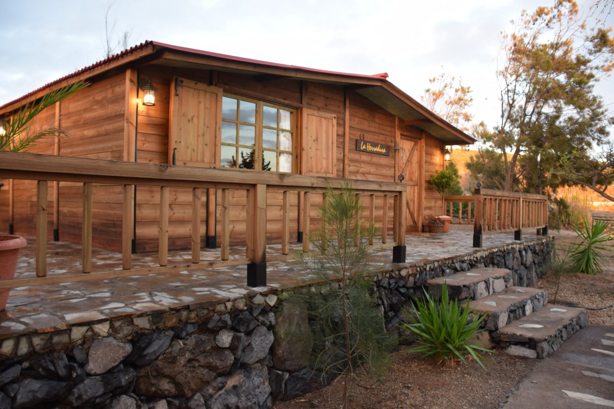

Galleria



Finca Cigüaña è un'oasi di tranquillità nel sud di Tenerife, dove natura, privacy e vista mare si incontrano per offrire un'esperienza di soggiorno autentica e rilassante.
Immersa in un contesto naturale curato e silenzioso, la finca è perfetta per chi cerca pace, comfort e un contatto diretto con l'isola.
La proprietà è composta da quattro case indipendenti, tutte dotate di giardino privato, vista mare e parcheggio riservato, garantendo massima privacy a ogni ospite.
Casa in muratura antica e ricca di fascino. Fino a 4 persone, bagno privato.
Casa in muratura con vista mare diretta, ideale per momenti romantici al tramonto. Fino a 4 persone, bagno privato.
Loft in legno dall'atmosfera calda e intima. Capacità fino a 4 posti letto.
Abitazione in legno con due camere da letto, perfetta per 3 ospiti.
La scelta ideale per coppie, famiglie o piccoli gruppi che desiderano vivere Tenerife in modo genuino, rilassante e immerso nella natura, senza rinunciare alla comodità.
Contattaci per disponibilita' e prezzi
💬 Contattaci su WhatsApp